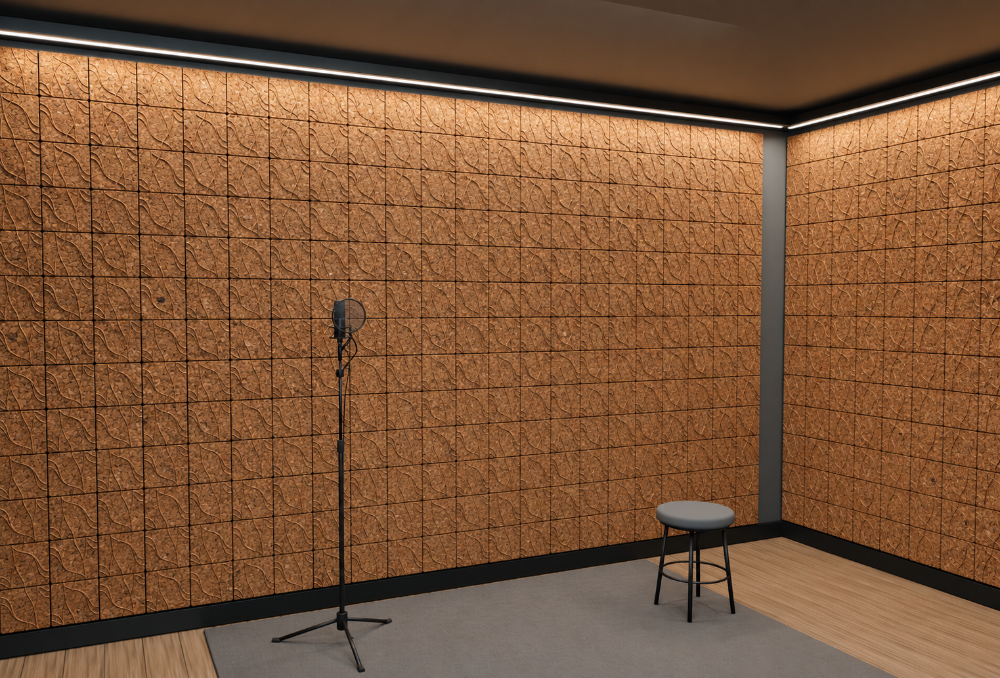
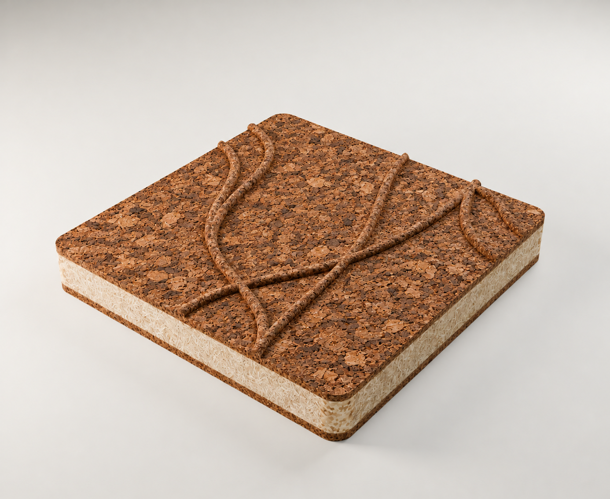
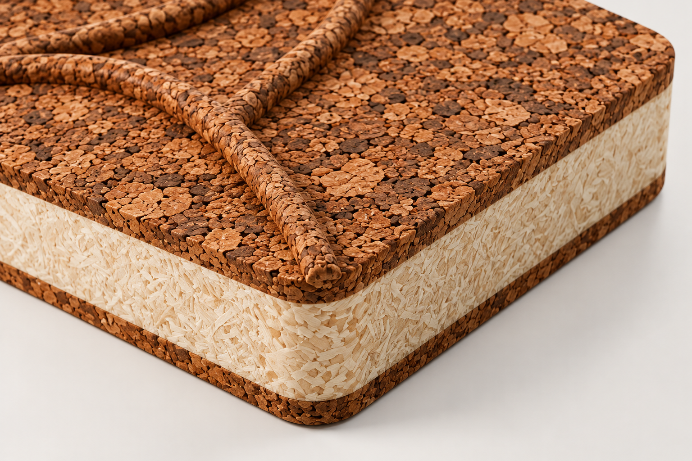
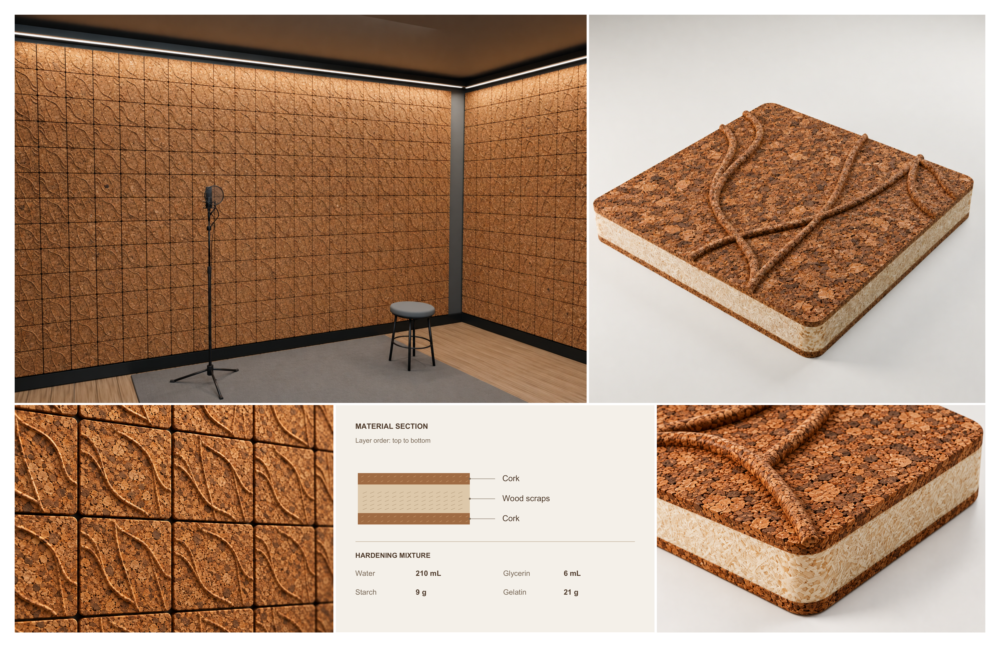

Material exploration · 2026
Cork Acoustic Panel
An experimental panel exploring cork, wood scraps, and a water-based binder through a layered construction and a textured surface.

Material & construction
The panel uses cork on the top and bottom, with wood scraps in the middle. This layered study explores how reclaimed material and surface texture can form an interior panel.
Binder mixture: water 210 mL · glycerin 6 mL · starch 9 g · gelatin 21 g.



Concept renderings with digitally edited material appearance. Acoustic performance has not been measured.